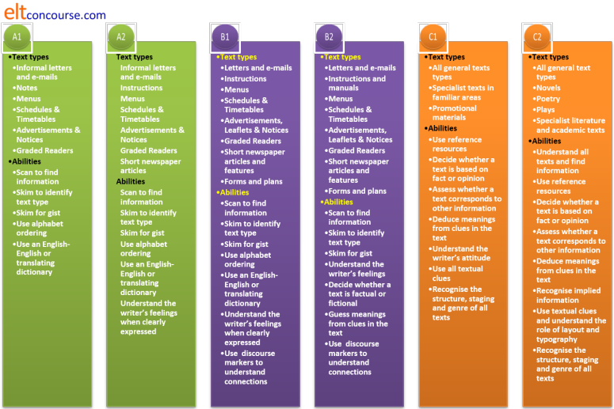
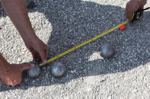
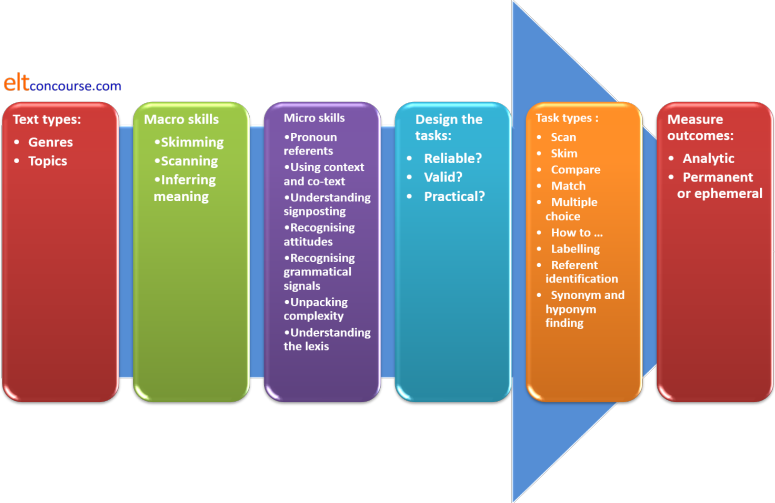

Assessing reading skills
Time was when almost all language testing relied, at least to some extent, on assessing reading comprehension and this is still the case. Many public examinations devote whole papers or parts of papers to assessing reading. Even when a test item does not target reading comprehension, some ability to comprehend and act on the instructions in the task rubric is being assumed and tested.
One issue is that all assessment of reading skills has to be indirect. When someone speaks or writes, there is a discernible and assessable product. Merely watching people read tells us nothing about the level of comprehension they are achieving or the skills they are deploying. This means that test items have to be carefully targeted at the skills we have identified as important for the group of learners we are concerned to assess.
We can, of course, test some underlying skills discretely. For example:
- we can test learners' abilities to understand lexical items through, e.g., matching or multiple-choice exercises
- we can assess the ability to recognise the function of conjunctions by, for example, getting learners to match sentence halves
- we can test appreciation of text structure and staging by getting learners to re-order paragraphs or whole texts
- we can test the ability to identify
pronoun referents by asking, e.g.
What does it refer to in line 25?
and so on.
However, before we do any of that, we need to define what reading skills we want to test and why. For more on the subskills of reading, see the guide to understanding reading skills (new tab). The following is premised on the fact that you are familiar with the content of that.
The aims of the teaching programme |
All assessment starts (or should start) from a consideration of the aims of instruction. With reading skills, however, it is notoriously difficult to identify specific skills in reading which are linked to specific purposes for doing so. An argument can almost always be made that the following are key macro reading skills whatever the setting, whatever the purpose and whatever the topic and text type:
- Scanning a text to locate specific data is required:
- by general readers to locate items of interest in, e.g., newspapers and websites or something as simple as a bus timetable
- for academic purposes to locate the part of a paper, article or book which focuses on what needs to be learned or cited
- in the workplace to make the identification and absorption of data efficient and focused
- Skimming to obtain the gist is needed:
- by general readers who simple want to get the gist of a text and don't need detailed understanding
- by students to judge whether a paper, book or article is relevant to their studies and current concerns
- by busy people in their occupations so they can judge whether something they are reading is relevant or ignorable in part or whole
- Identifying the stages of a text using generic knowledge is
required:
- by general readers looking for the circumstances or outcomes of, e.g. a news story or anecdote
- by students to find the parts of the text which present the data or the concluding arguments quickly without reading every word
- by people in the workplace to allow them to locate the data they need in, e.g., a report
Underlying these three macro skills are a number of micro reading skills without which few texts can be understood. These will include, for example:
- Identifying pronoun referents
- Using context and co-text to infer meaning
- Understanding the way writers in English explicitly signpost, e.g., conclusions, introductions, examples and justifications
- Recognising how conjuncts, disjuncts and adjuncts are used to link ideas, reveal attitudes and modify phrases
- Recognising grammatical signals concerning time and aspect to understand the setting
- Unpacking complex nominalisations and verb phrases to understand the essential participants in a sentence
- Understanding enough of the lexis to read the text with adequate understanding
 |
Three basic tenets |
- We have to use assessment tasks which focus on the kinds of texts the learners will need in 'the real world'.
- We need to design tasks which accurately show the learners' ability.
- We need to have a reliable way to score the learners' performance.
These three factors are to do with ensuring reliability and
validity. For more on those two concepts, see
the guide to testing, assessment and evaluation.
The rest of this guide assumes basic familiarity with the content of
that guide.
Fulfilling all three criteria adequately requires a little care.
 |
Identifying text types |
The first step is to find out what sorts of texts the learners
will need to access. This is by no means an easy undertaking,
especially if the course is one in General English (also known as ENAP
[English for No Apparent Purpose]) when it is almost impossible to
predict what sorts of texts, for what purposes the learners may one
day need to access (see below for a generic check-list of skills).
On courses for very specific purposes, it is easier to identify the
sorts of texts the learners will encounter and the purposes to which
they will put them but there is no related set of subskills that we
can identify with confidence that will allow them easy access to
texts in particular topic areas although we can look at the genres
of texts and identify key language areas to focus on. For
example:
| Genre or text type | Is often staged ... | Examples include | Containing |
| RECOUNT | Orientation > Record of events > Reorientation > Coda | an anecdote, an excuse for being late, a funny thing happened to me on the way to ... | Time and tense markers, circumstances (when, who with, where etc.), material and behavioural verbal processes |
| NARRATIVE | Orientation > Complication > Resolution > Coda | a novel, a short story, fables, parables, jokes | Time and tense markers, circumstances (when, who with, where etc.), material and behavioural verbal processes |
| PROCEDURE | Goal > Materials > Sequence of steps | recipes, manuals, maintenance instructions | Behavioural verb imperatives, lists of nouns, quantifiers and adverbials of manner |
| INFORMATION REPORT | General statement > Description (ordered information by sub-topic) | encyclopedia entries, text book sections, reports of experiments/studies | Relational verbal processes, tense markers, causal conjuncts, exemplification, graphical representations of data |
| EXPLANATION | Identifying statement > Explanation of stages of a process | web pages like this, explaining processes | Material verbal processes, circumstances of time and place, sequential markers, passive forms |
| EXPOSITION | Statement of position > Preview of arguments > Arguments + evidence as examples > Reinforcement of position | political pamphlets, leader columns in papers, letter to the editor | Modal auxiliary verbs of obligation and advice, attitudinal or content disjuncts, material and behavioural processes, future forms |
| DISCUSSION | Issue > Arguments for > Arguments (reversed or combined > Optional statement of position | academic texts, student essays, histories | Passive forms, modal auxiliary verbs of possibility / likelihood, behavioural and material processes, circumstances of place |
When we have done some analysis of the structure and likely
language content of the typical texts certain learners need to
access, we can design discrete item, indirect tests of their ability
to understand the staging and content of the texts.
If any of the above mystifies, try
| the guide to genre | which is an overview of the area and considers the seven text types identified above |
| the guide to circumstances | which considers how verbal processes are modified |
| the guide to verbal process | which considers the kinds of events and states that verbs encode |
| the general guide to assessment and evaluation | which focuses on reliability, practicality and validity among much else concerning test design |
A general reading-skills check-list |
It may be the case that you find yourself teaching General
English rather than English for Specific Purposes. If that is so, you
need a general-purpose check-list of abilities at various levels
against which to assess your learners' abilities to read.
Here's one:

The abilities and text types are, of course, cumulative.
At, e.g., B2 level, a learner should be able to handle everything
from A1 to B1 already.
Designing tasks |
Now we know what sorts of thing we want to assess, the text types
we are targeting, the purposes of reading, the subskills deployed
and so on, we can get on and
design some assessment procedures.
There are some generic guidelines for all tasks.
If you have followed the guide to testing, assessment and
evaluation (see above), you will know that this is something of a
balancing act because there are three main issues to contend with:
- Reliability:
A reliable test is one which will produce the same result if it is administered again (and again). In other words, it is not affected by the learner' mood, level of tiredness, attitude etc.
This is not too challenging area in the case of assessing reading because the test items are fixed and repeatable.
We do need, however, to be aware that very long reading texts are unlikely to target skills individually and may overwhelm learners who are otherwise good readers of certain text types. A range of short tasks focused as far as possible on micro skills is a better way forward in most circumstances.
Assessment, too, is often repeatable and double or triple marking can be used to raise reliability. - Validity:

Two questions here:- do the texts represent the sorts of texts the learners are
likely to encounter?
For example, if we set out to test someone's ability to read academic materials effectively, we need to ensure that the topic area is valid for them. - do we have enough tasks to target all the skills we want
to assess?
For example, if we want to test the ability to use context and co-text to infer meaning, do we have a task or tasks focused explicitly and discretely on that skill?
- do the texts represent the sorts of texts the learners are
likely to encounter?
- Practicality:
Against the two main factors, we have to balance practicality.
It may be advisable to set as many different tasks as possible to ensure reliability and to try to measure as many of the subskills as possible in the same assessment procedure to ensure validity but in the real world, time is often limited and concentration spans are not infinite.
Practicality applies to both learners and assessors:- for learners, the issue is often one of test fatigue.
Too many tests over too short a time may result in learners losing commitment to the process.
On shorter courses, in particular, testing too much can be perceived as a waste of learning time. - for the assessors, too many time-consuming tests which need careful assessment and concentration may put an impractical load on time and resources. Assessors may become tired and unreliable.
- for learners, the issue is often one of test fatigue.
Examples may help |
Say we have a short (150-hour) course for motivated B2-level
learners who will need to operate comfortably in an English-speaking
culture where they will live and work. They will need,
therefore, to be able to read and understand a wide and unpredictable range of texts so we
need to focus our assessment on generic, recognisable reading
skills.
We have around three hours of the course earmarked for this
assessment.
What sorts of items could we include, bearing mind reliability,
validity and practicality?
Evaluate the following ideas, based on these principles and then
click on the
 to reveal some comments.
to reveal some comments.
|
Give the learners a long news article from a newspaper and set multiple-choice questions on its content |
Negatives:
On the positive side:
|
|
Give the students a range of 5 short texts to read, each targeting a different skill:
Then interview them to see how much they have really understood. |
Negatively:
On the positive side:
|
Give the learners either:
Ask the students to summarise, in writing, the similarities and differences between the two texts. |
Negatively:
On the positive side:
|
Designing anything in life involves striking a balance between competing priorities.
The kind of evaluative thinking that you have used here can be applied to any kind of assessment procedure, regardless of topic, level and task types.
 |
Other reading-skill assessment task types |
It may be that your circumstances allow for a very simple
reading
tasks such as those requiring the learners to answer multiple-choice
or other comprehension questions such as sentence completion tasks
or tasks requiring the selection of appropriate re-wordings. This kind of test can be
done in the classroom or elsewhere.
Those are all legitimate
tasks providing the task type and content suits the purposes of
assessment.
There are other ways.
No list can be complete, but here are some other ideas for other
ways to set reading tasks for assessment purposes. The
content of any task will of course, depend on all the factors
discussed so far.
- Scanning tasks

These tasks always require longer texts but the task itself can be graded even if the text is ostensibly beyond the learners' level. Just finding dates and times in an otherwise complex text is a good test of the ability to scan and ignore the unnecessary. - Compare and contrast tasks
See above for an example of this task type.
- Matching tasks

Getting people to match a short text to a picture (or series of similar pictures where only one represents the content of the text) is a good test of detailed understanding. - Multiple-choice tests

These tests can be carefully targeted on particular items in the text to test the ability to read for detail, infer likely meaning of lexemes and understand tense relationships and so on. They can also be targeted at the ability to unpack complexity and figure out the subject and object of verb phrases. - How to ... stimuli
In these tests, learners may be required to read instructions and carry out tasks according to what they understand. Popular topics are origami and following directions to locate something. They can be motivating and intriguing tests. - Labelling tasks
In these tasks, the learners are given a diagram of something fairly complicated and asked to match the descriptions of various labels (A, B, C ...) to the parts of the diagram that the text refers to. - Identifying referents

These tasks are finely targeted at getting learners to identify what words such as this, that, it, they etc. refer to in the text. - Synonym and hyponym finding
In these tasks, learners are given either a synonym, a matching definition or a hyponym and asked to locate in the text a word that matches the definition, is a synonym in this context or a hyponym of the hypernym they have been given. E.g., An owl refers to a type of ..., Another word for 'baby bird' is ...etc.
|  |
Measuring outcomesIf you can't measure it,
you can't improve it |
Unlike writing and speaking tests, in which holistic, impression
marking can be done, reading tests are normally marked analytically.
This involves breaking down the tasks and being specific about
the criteria you are using to judge success. Any amount of
weighting can be applied to whichever of the micro skills you judge
to be most important.
Normally, the results of a reading test are permanent in some
way (short answers, multiple choice responses and so on). Even
the success of a 'How to ..' task (above) can be objectively marked.
This means that marking can be objective (and the test is reliable,
to that degree) but, unless the test items target recognisable and
definable micro skills, validity is always problematic.
The summary

| Related guides | |
| assessing listening | for the guide |
| assessing speaking | for the guide |
| assessing writing | for the guide |
| assessment in general | for the general guide |
| the in-service skills index | for associated guides |